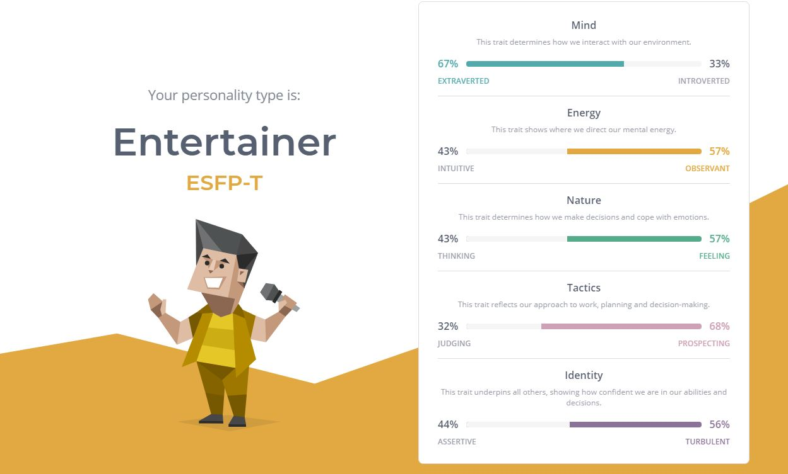
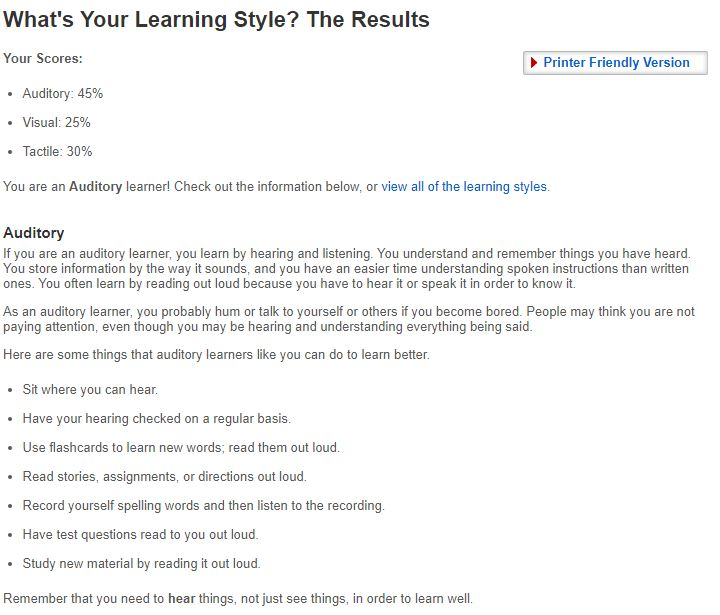

Personal Profile
Myers-Briggs test
When taking the personality test, I didn’t think much of it as I am not the type of person to take an online test as I don’t see gaining anything from them but the results from this test shocked me. It was so accurate to my personality that I found it sort of scary in a good way. Reading through all the sections revealed to me things that I’ve been trying to figure out and was eye-opening. With these results, I can better work on my personality and realised my weakness and better them. I recently have been on a journey to change all my bad habits and this will help me out a lot. Also, after reading about the career path, I started to second guess my ideal job as it says that entertainers are not suited to data analysis jobs but for now, I’ll stick with my hearts and see where it leads me
I currently enjoy working in a team but I also do enjoy working alone at times because I tend to make my own choices rather than be a collective one. From the results, it concludes that entertainers are exceptionally good at keeping the workplace in order. Their great regard for light-hearted, enjoyable relationships blends nicely with their meticulous attention to detail and social abilities. As a team member, I will be people-orientated and will do the best I can to create a comfortable workplace and make sure everyone enjoys their time at work. These qualities will assist me with creating a great relationship with co-workers and motivate them to work harder.
As for being a team leader the results suggests that I will have no trouble persuading others to accept their suggestions since I will be a persuasive and assertive team leaders. At the same time, I will encourage each team member to express their thoughts, ensuring that everyone gets along.

Learning Style Test
Before this test, I didn’t know what the best way to study was and everything I did was very ineffective but from this test, I was able to understand that my best way of learning was from Audio. Now that I know this, I will be able to do learn things even quicker.